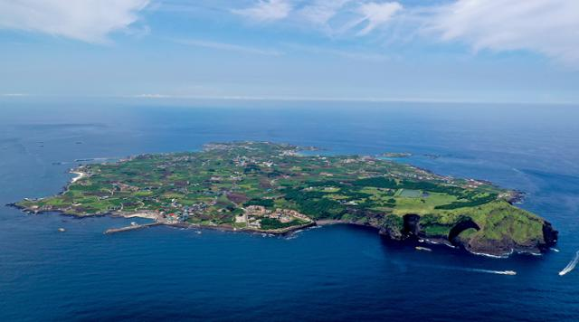

제주특별자치도에 소속되어 있는 부속도들 중 1곳이자 제주특별자치도의 최동단. 제주도에서는 본섬인 제주도를 제외하면 가장 넓다(6.18제곱킬로미터). 명칭은 소(牛)가 옆으로 누워있는 모습과 닮았다고 해서 우도(牛島)로 붙였다고 전한다. 바다 쪽에서 우도봉 쪽을 바라보면 소(牛)가 옆으로 누워 있는 모습과 같다고 한다. 행정구역은 제주특별자치도 제주시 우도면이며, 면소재지는 우도면에 있는 유일한 법정리인 연평리다. 우도로 들어갈 수 있는 선박은 구좌읍 종달리와 성산읍 성산항에서 배를 타야 되는데, 성산항에서 배가 더 많이 출항해서 우도의 생활권도 사실상 성산읍 쪽이다. 잇달은 영화와 드라마 촬영으로 상당히 유명해졌으며 여름 성수기면 우도로 들어가는 여객선은 발디딜 틈이 없다. 섬 전체가 완전히 관광지화 되었다. 옛 모습을 기억하고 다시 찾았다가 180도 달라진 풍경에 실망하는 경우가 많다. 난개발과 몰려오는 관광객들로 인해 옛 모습이 남은 게 거의 없다.
우도
제주시의 면 우도면
